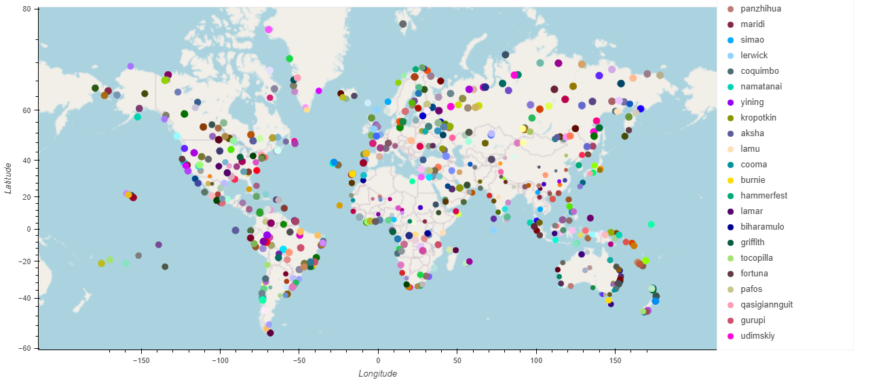
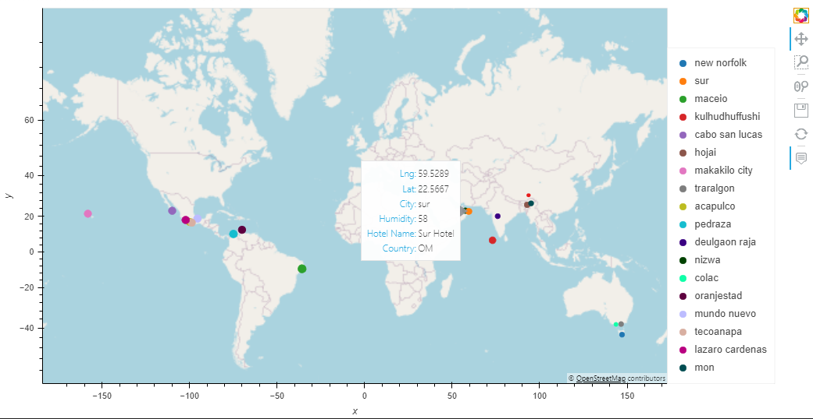

Ina Luo
@BootCamp

Part 2: VacationPy
Create a map that displays a point for every city in the city_data_df DataFrame Narrow down the city_data_df DataFrame to certain weather condition Find nearby hotels
Two map plot created and save PNG in GitHub

